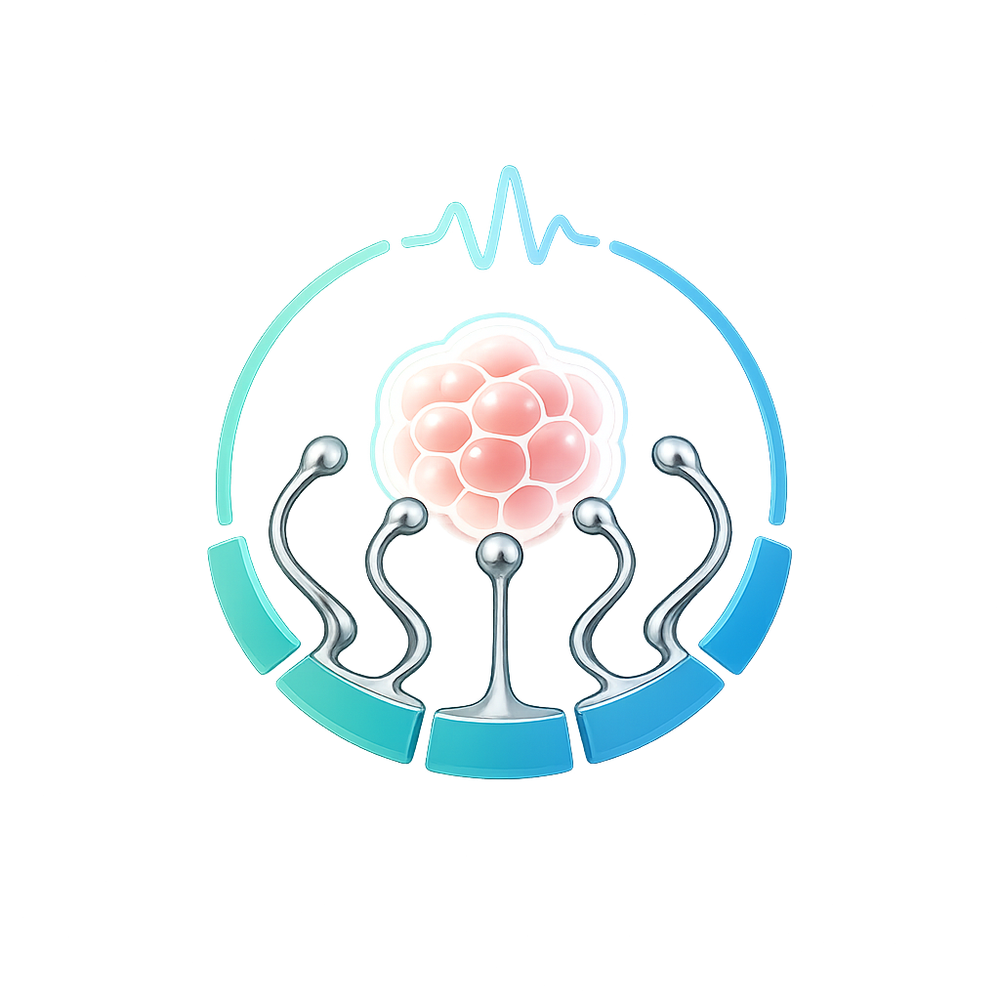

About
BME student at SUSTech · Bioelectronics · Flexible Electronics
Research Interests
Why Biomedical Engineering
As human longevity continues to rise, the challenges posed by neurodegenerative disorders and chronic conditions have become increasingly salient. Mere extension of lifespan is no longer sufficient; instead, the preservation of high quality life — encompassing both physical and cognitive vitality — has emerged as a critical priority.
My academic and research endeavors are centered on the intersection of bioelectronic interfaces and flexible electrode systems, with the objective of advancing next-generation neurotechnologies that enhance human health and functional performance.
Current Work
At SUSTech I focus on liquid metal–polymer conductors for biomedical applications and electrophysiological monitoring platforms for in vitro organoid models — connecting materials science to measurable electrophysiology.
Academic Timeline



Tools & Skills
Outside the lab I enjoy museums, billiards, photography, and the overlap between technology and art — see the Gallery for the visual side.